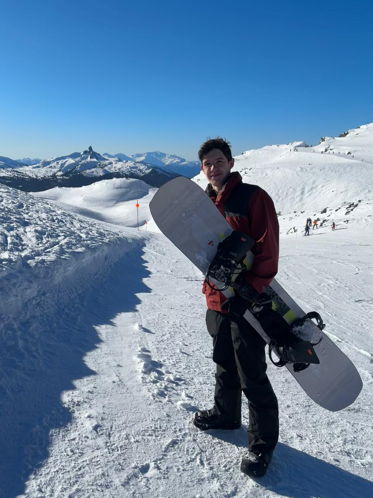
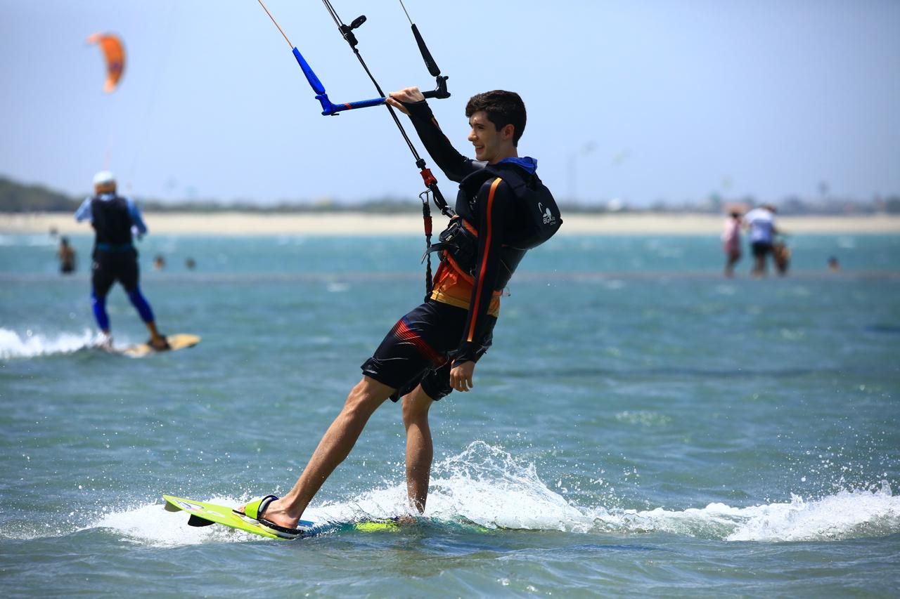

Intercâmbio
Na metade do meu segundo ano do Ensino Médio eu realizei um intercâmbio sociocultural na cidade de Surrey no Canadá, onde eu morei por 1 ano e fiquei imerso na cultura e nos hábitos canadenses. Lá eu tive a oportunidade de aprimorar e conseguir proficiência C1 em inglês e tirei certificado de Cambridge. Além disso conquistei notas de excelência e recebi cartas de recomendação de alguns professores reforçando minha dedicação e esforço no periodo.
Hobbies
Meus hobbies principais são praticar esportes no geral, como basquete e tênis de mesa, esportes radicais como kitesurf e snowboard e jogar videogames. Além disso adoro passar tempo com a familia e com os amigos e viajar nas férias.


Conquistas
Durante meus anos no colégio consegui multiplas medalhas em competições: 2 de ouro e 1 de bronze na Olímpiada Canguru de Matemática, além de ter tido grande sucesso no time de basquete da escola, conquistando campeonatos regionais e entrando em um clube de Belo Horizonte chamado Giástico, no qual fomos campeões brasileiros do sub-15. Além disso pratiquei alemão e conquistei o certificado básico de proficiência no idioma (A1).